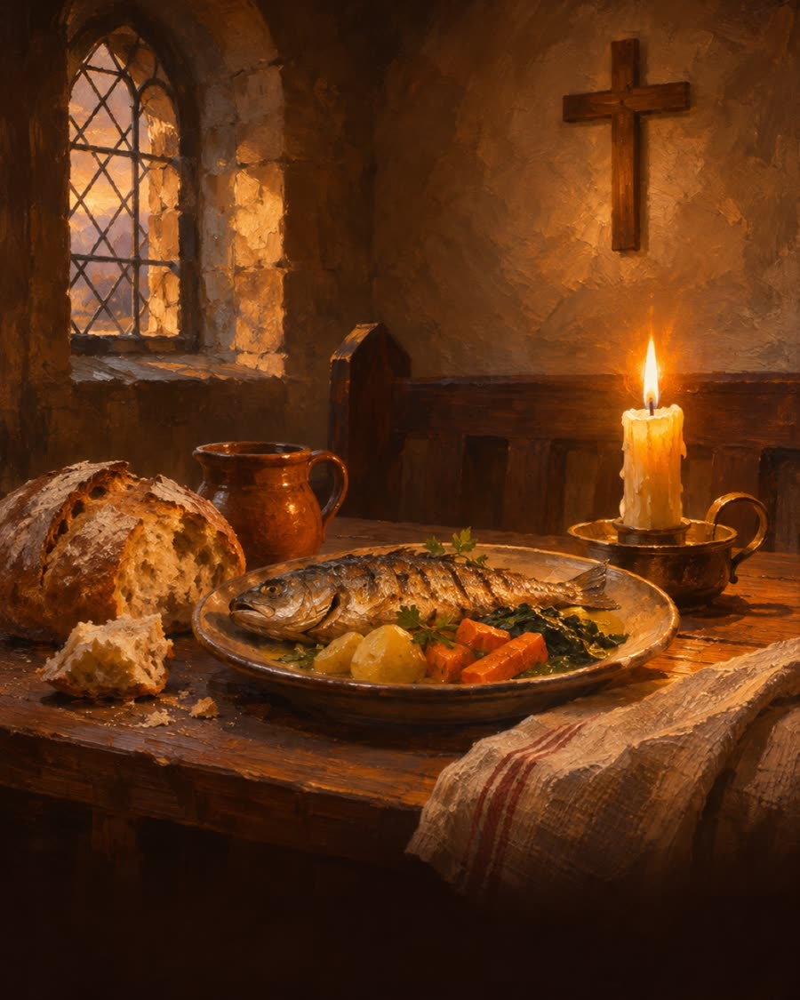
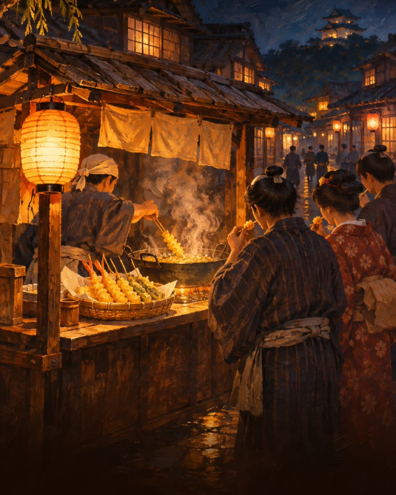

순례자의 한끼한밤
순례자의 한끼한밤
일본 튀김 '덴푸라',
다들 일본말인 줄 아시죠?
이 이름, 포르투갈에서 왔다는 설이 있습니다.
바삭한 새우튀김, 채소튀김. 일본 음식점에서 '덴푸라(天ぷら)'라고 부르는 그 튀김입니다. 이름만 들으면 영락없이 일본말인데, 이 단어를 거슬러 올라가면 16세기 포르투갈 신부님들이 나옵니다.
1543년, 포르투갈 배가 닿다
1543년, 포르투갈 사람들이 일본 남쪽 섬 다네가시마에 닿습니다. 그 뒤 나가사키가 교역의 중심 항구가 되죠. 배에는 상인뿐 아니라 가톨릭 선교사, 신부님들도 타고 있었습니다. 이들과 함께 반죽을 입혀 튀기는 요리법도 일본에 전해진 것으로 봅니다.


고기를 먹지 않는 날, '템포라'
가톨릭에는 고기를 먹지 않고 지내는 절기가 있었습니다. 라틴어로 '템포라(tempora)', 계절이나 절기라는 뜻이에요. 이런 날에는 고기 대신 생선과 채소를 반죽에 묻혀 튀겨 먹었다고 합니다.
일본 사람들 귀에는 이 '템포라'가 '덴푸라'로 들렸다는 설이 있습니다. 포르투갈어 '템페루(tempero, 양념)'에서 왔다는 설도 있어서, 딱 하나로 정해진 건 아닙니다.
이름이 건너온 길 (여러 설 중 하나)
지금도 포르투갈에는 껍질콩을 반죽에 묻혀 튀긴 '페이시뉴스 다 오르타(peixinhos da horta)'라는 요리가 있습니다. '밭에서 나는 작은 물고기'라는 귀여운 이름인데, 덴푸라의 조상으로 자주 꼽힙니다.

에도의 길거리 포장마차
덴푸라가 일본 서민 음식이 된 건 에도 시대입니다. 나무집이 빽빽하던 에도(지금의 도쿄)에서는 불이 날까 봐 집 안에서 기름을 끓이는 걸 꺼렸다고 해요. 그래서 튀김은 길거리 포장마차(야타이)에서 꼬치에 꽂아 팔았고, 누구나 서서 사 먹는 음식이 됐습니다.

고급 일식집의 덴푸라만 떠올리면 의외지만, 시작은 이렇게 길거리 간식이었습니다.
저는 언젠가 포르투에서 식당을 하는 게 꿈입니다. 그 식탁에도 튀김 한 접시는 꼭 올리고 싶어요. 포르투갈에서 일본으로 건너간 튀김이, 한국 사람 손을 거쳐 다시 포르투갈로 돌아가는 셈이니까요.
일본 튀김 이름 속엔,
포르투갈의 '고기 없는 날'이 숨어 있을지도 모릅니다.
For pilgrims passing by
Tempura sounds completely Japanese, but the name may come from Portugal. The Portuguese reached Japan in 1543, and missionaries followed; and on Catholic fasting days, "tempora" in Latin, they ate battered and fried fish and vegetables instead of meat. Portugal still has peixinhos da horta, fried green beans often called tempura's ancestor. In Edo-period Tokyo, fear of fire kept frying out of homes, so tempura became street food sold on skewers.
참고한 자료
- 이름 유래는 라틴어 tempora설, 포르투갈어 tempero설 등 여러 설이 있습니다 (일본 문화청 조사 자료)
- 에도 시대 길거리 튀김: Google Arts & Culture 'Edo fast food: tempura', Kikkoman 식문화 자료 등
- Wikipedia 'Tempura'
한끼한밤 이야기
🕯️ 오늘 밤 이야기는 여기까지.
다음 이야기는 순례길의 진짜 끝, 피스테라 0km입니다.